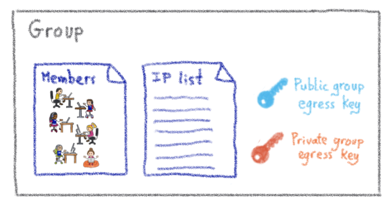
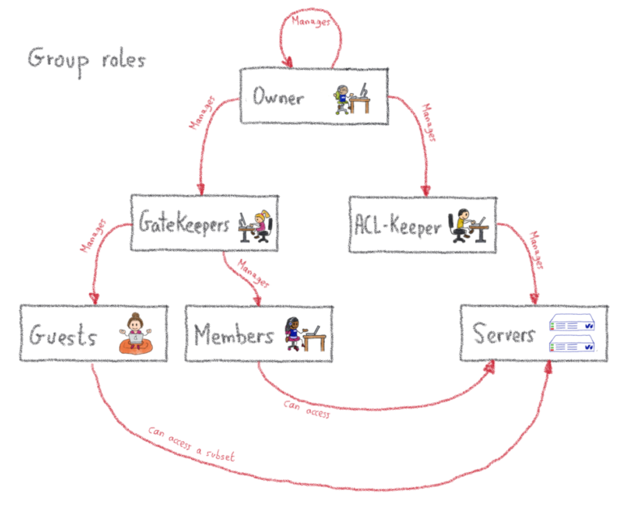

Access management
There are two ways of managing authorizations on The Bastion, it is extremely important to understand those two ways because they're complementary.
Note
This section is largely inspired from the blog post about the subject
The main idea is that delegation is at the core of the system: everybody has their own set of responsibilities, and potential actions, without having to ask the bastion admin.
Personal Accesses
On the bastion, each account has (at least) one set of personal egress keys. These beasts are generated when the account is first created. The personal egress private key sits in the bastion account home. The account user has no way to see it, or export it out of the bastion, but they can use it through the bastion's code logic. The user can retrieve the corresponding public key at any time, using the selfListEgressKeys command, and install it – or get it installed – on the remote servers they needs to access. Depending on your use case – and the level of autonomy you want to give to the teams – there are two ways of managing these personal accesses.
Decentralized (help yourself)
The first way mimics how you would manage accesses if you weren't using an SSH bastion at all. This is a perfectly valid way to handle accesses on a simple level, without too many users and a limited number of machines. This allows anyone to grant themselves personal accesses on the bastion, without having to ask anyone else to do it. It sounds like a security hole, but it's not. If someone adds themself a personal access to the remote server, it will only work if their personal egress public key has already been installed on the remote server. In other words, they either already had access to the remote server to do this – using means other than the bastion – or somebody who had access to the remote server accepted the addition of their key. Either way, they cannot magically grant themselves personal access without the admins of the remote server first permitting their key.
Centralized (ask the IT crowd)
Another way to handle this can be to grant a limited number of people, such as security teams, the right to add personal accesses to others. This way people are less autonomous, but it might be useful if adding accesses has to be enacted via normalized processes. It also has some nice effects: as a sysadmin, one of the pros is that you can create 3 separate accounts on the remote machine, and map them to each bastion account you're adding. This is a good method for achieving end-to-end traceability; including on the remote server; where you might want to install auditd or similar tools. It's also doable in the help yourself mode, but it may be harder to enforce.
To be clear, this access model doesn't scale so efficiently when we're dealing with whole teams, or big infrastructures – this is where group-based access comes handy.
Group Accesses
{kind=link}
A group has three components:
A list of members (accounts, representing individual people)
At least one set of group egress keys
A list of servers (or more precisely IPs)
Servers list
The servers list is actually a list of IPs, or IP blocks. They map to your servers, network devices, or anything else with SSH capability that has an IP (on which the egress group key has been installed). Technically, this list is actually composed of 3-tuple items: remote user, remote IP (or IP block), remote port. That which applies to the personal accesses, also applies here: adding a server to the list doesn't magically give access to it, it is first necessary to install the egress group public key. Of course, managing the installation of these keys manually quickly becomes impractical, but you can consider these part of the configuration of the servers, hence they should be managed with whichever centralized configuration system you already use (Puppet, Chef, Ansible, /bin/cp… wait, no, strike this last one).
Members list
The members are people who can connect to any server listed in the group server list. They'll be using the private egress group key they have access to, as members of said group. Of course, they have no way to extract this private key for their own use outside of the bastion, they can only use it through the bastion's code logic.
Got a new team member? Just add them as a member of your group, and they instantly get access to all the group servers. Somebody leaves the company? Just delete their account on the bastion, and all the accesses are instantly gone. This is the case because all your servers should have incoming SSH sessions limited to your bastions. This way, any rogue SSH key that would have been added, is no longer of any use.
And some more
We've covered the basics of the group-based approach, but as we need a lot of flexibility and delegation, there is a little more to cover. Remember when I said a group had 3 components? Well, I lied. A group has more than just members. Additional group roles include:
Guests
Gatekeepers
Aclkeepers
Owners
All of these are lists of accounts that have a specific role in the group.
First, guests. These are a bit like members, but with less privileges: they can connect to remote machines using the group key, but not to all the machines of the group, only to a subset. This is useful when somebody outside of the team needs a specific access to a specific server, potentially for a limited amount of time (as such accesses can be set to expire).
Then, gatekeepers. Those guys manage the list of members and guests of the group. In other terms, they have the right to give the right to get access. Nothing too complicated here. Then, there are the aclkeepers. As you may have guessed, they manage the list of servers that are part of the group. If you happen to have some automation managing the provisioning of servers of your infrastructure, this role could be granted to a robot account whose sole purpose would be to update the servers list on the bastion, in a completely integrated way with your provisioning. You can even tag such accounts so that they'll never be able to use SSH through the bastion, even if somebody grants them by mistake!
Last but not least, the owners have the highest privilege level on the group, which means they can manage the gatekeepers, aclkeepers and owners lists. They are permitted to give the right to give the right to get access. Moreover, users can accumulate these roles, which means some accounts may be a member and a gatekeeper at the same time, for example.
Global roles
Beyond the roles we have just described – which are all scoped to a group – there are two additional roles, which are scoped to the whole bastion: the superowner and the bastion admin.
In a nutshell, a superowner is the implicit owner of all groups present on the bastion. This comes in handy if the group becomes ownerless, as superowners are able to nominate a brand new owner.
The most powerful role is the bastion admin. This role should only be given to a few individuals, as they can impersonate anyone, and in practice should not be given to somebody who is not already root on the bastion's operating system itself. Among other things, they manage the configuration of the bastion, where the superowners are declared.